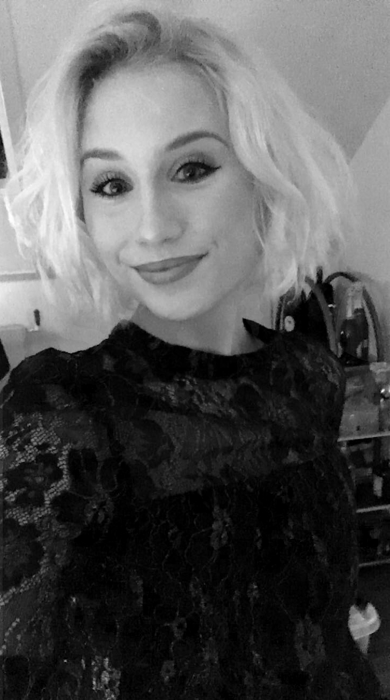

Lidt om mig og mit uddannelsesforløb
Kort info
Mit navn er Julie Bagerskov.
Jeg bor på Amager kommer oprindeligt fra Roskilde.
Jeg har altid syntes, det var sjovt at udfordre mine kreative kompetencer. Jeg har f.eks. brugt en del af min fritid på videoklipning af bl.a. polterarbender, hvor jeg fik tilsendt nogle videoer og billeder fra gæsterne.
Derudover bruger jeg også en del tid på at tage billeder selv og redigere dem i bl.a. Photoshop.
Uddannelse
Jeg er igang med at studere multimediedesign på Cph Business i Lyngby, hvor jeg er ved at være færdig med første semester.
Jeg startede på denne uddannelse, da jeg gerne vil udvide min viden og kompetencer indenfor faget. Jeg valgte lige netop denne skole, da de tilbyder et meget bredt udvalg af undervisningsstof indenfor mediedesign.
Jeg har altid været mere hen af det kreative, så derfor finder jeg kodning som en forfriskende udfordring, og jeg ser frem til at lære en hel masse mere om HTML og CSS.
Det gælder selvfølgelig også stof indenfor design.
Derudover har vi også gennemgået projektplanlægning, som jeg fandt utrolig relevant i forhold til, hvordan man griber projekter an, især de større projekter.
Indenfor projektplanlægning har vi gennemgået:
Rollefordelinger, altså hvilken rolle har hvert gruppemedlem i projektarbejdet? Hvordan passer det sammen med resten af gruppemedlemmernes roller? Hvordan finder vi en balance imellem at udnytte og udvikle vores individuelle kompetencer?
Disse er blot nogle af de spørgsmål, vi har gået igennem i undervisningen.
Et andet punkt under projektplanlægning vi har gennemgået er OBS, PBS og WBS.
OBS er en forkortelse for Object Breakdown Structure.
Kort fortalt er OBS en måde at få et overblik over, hvordan man vil gribe opgaven an. Det som er så specielt ved OBS er, at man udelukkende ser på projektets formål. Det fokuserer altså kun på hvorfor produktionen er nødvendig og ikke på selve produktet.
OBS bliver brugt som et framework for at uddeligere og sørge for overblik blandt gruppemedlemmerne.
PBS er en forkortelse af Product Breakdown Structure.
PBS er et oversigt, du laver af de ting du har brug for, for at kunne lave de færdige produkt.
Her fokuserer du altså på selve produktet.
WBS står for Work Breakdown Structure.
WBS og PBS minder en del om hinanden. WBS hjælper med at organisere og definere det samlede arbejdsområde, bl.a. med vejledning til tidsplan af udvikling og kontrol.
Under projektplanlægningsforløbet lavede vi nogle personlighedsteste, da vi skulle finde ud af, hvilke roller der passer til hvert enkelte person.
Heraf lavede vi nogle forskellige teste, bl.a. Belbins Team Roles Table og 16personalities.
Et andet meget interessant emne vi har gennemgået her på første semester er Segmentering.
Her gennemgik vi målgruppestrategier, personaer, segmenteringsvaribaler, m.v.
På denne linje, bliver man ikke bare undervist i grafisk design og kodning, men man lærer også om, hvordan man håndterer og analyserer målgrupper, så man kan skabe det bedst mulige produkt til den rette målgruppe samt teamwork, hvilket også er utrolig vigtigt i en arbejdsproces, for at produktet bliver bedst muligt.
Det ovennævnte er derfor grunden til, at jeg er igang med at studere til multimediedesigner på Cph Business i Lyngby.
Jobs
Jeg arbejdede fuldtid for Gogift.com i min studiepause.
Her arbejdede jeg i logistikafdelingen, hvor jeg havde ansvaret for finsk og norsk b2b, b2c og reedem forsendelser.
Her var jeg det bindende led mellem det finske og det norske kundeserviceafdelinger og logistikafdelingen.
Jeg er sat fastansat i Gogift i dag, blot som studiejob.
